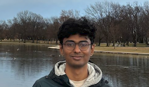

Tanmay Jyothis
About
Hello! My name is Tanmay. I recently completed my degrees in Computer Science and Mathematics at the University of Maryland, College Park.
Broadly speaking, I am interested in algorithms, prediction, and decision making under uncertainty. Recently, I have also been bouldering.
Currently, I am (very fortunately) doing research with Professor Aravind Srinivasan at UMD. I have also had the privilege to receive the advice and tutelage of Professor Armand Makowski.
Selected coursework
Computer Science
- Statistical Pattern Recognition · CMSC828C
- Algorithms · CMSC651
- Compilers · CMSC430
- Design & Analysis of Algorithms · CMSC451
- Database Design · CMSC424
Mathematics
- Random Processes · ENEE620
- Stochastic Processes · STAT650
- Linear Algebra · MATH405
- Advanced Calculus I & II · MATH410–411